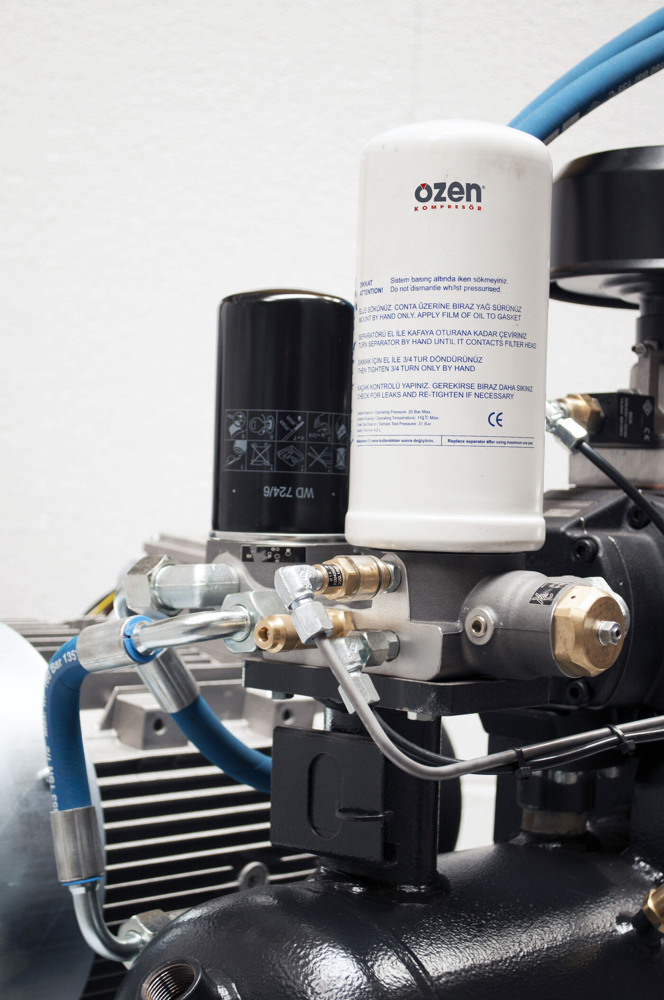
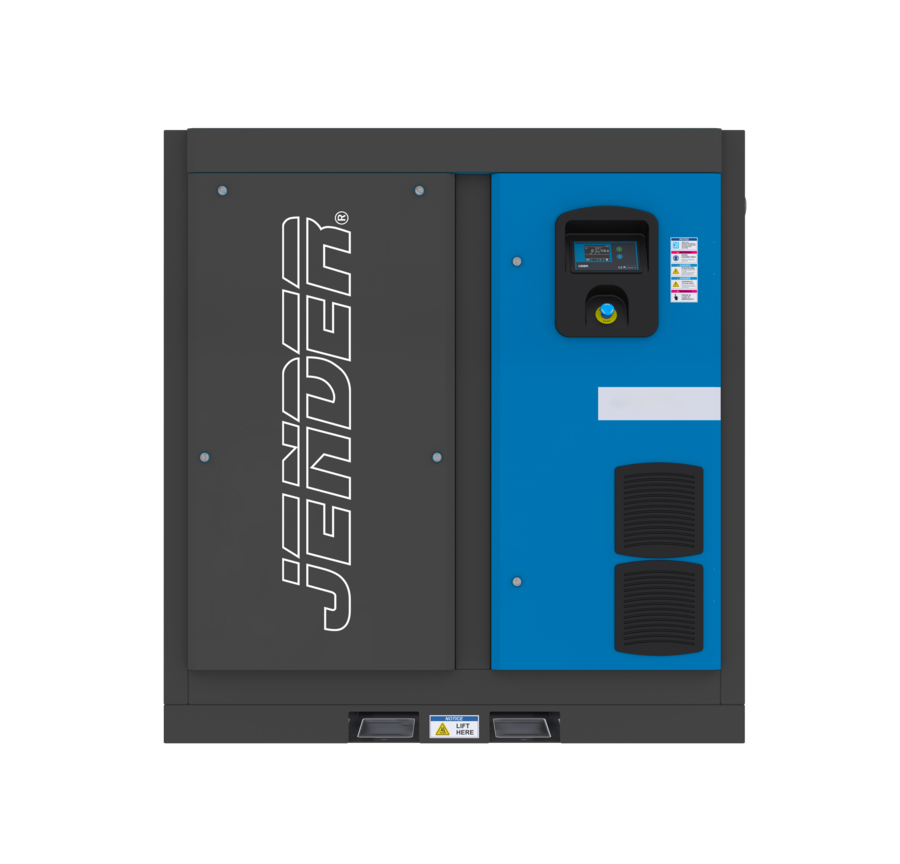

En JENDER desarrollamos sistemas de aire comprimido bajo especificaciones propias, pensados para responder a las necesidades reales de la industria. Definimos cómo es cada equipo —dimensionamiento, configuración y componentes críticos— para ofrecer máquinas eficientes, fiables y duraderas, con una elevada calidad del aire y un consumo energético contenido.
Desde nuestra creación en el año 2006 hemos trabajado con una visión clara: convertirnos en una marca de confianza para los profesionales que necesitan soluciones de aire comprimido competitivas, accesibles y preparadas para rendir en entornos industriales exigentes.
JENDER es una marca creada por y para el profesional. Cada producto se desarrolla teniendo en cuenta la experiencia de los usuarios, las condiciones reales de trabajo y las necesidades de cada aplicación. Y después de la venta, respondemos desde España con garantía, repuestos y servicio técnico.


Cuando compras un compresor, no solo pagas la máquina: pagas cada eslabón de la cadena que la trae hasta ti. Distribuidores, revendedores… todos suman su margen, y ese sobreprecio acabas asumiéndolo tú.
En Jender tratas directamente con la marca: sin revendedores que encarezcan el precio ni que te dejen solo cuando algo falla. El resultado es doble: un coste total más competitivo y un único responsable de principio a fin, la marca que define y homologa tu equipo es la que responde por él.
Mejor precio, trato directo y el respaldo de quien conoce cada máquina por dentro. Así es como entendemos el aire comprimido.
El aire comprimido es una de las energías más utilizadas en la industria: cuando se para, se para la producción. Por eso el coste real de un compresor no termina en su precio: incluye la energía que consume, el mantenimiento que necesita y cada hora de parada. En Jender lo cuidamos todo, desde la configuración del equipo hasta la rapidez de la respuesta.
Equipos configurados para trabajo industrial continuo y dimensionados según tu consumo real.
Componentes críticos de fabricantes de reconocido prestigio, conforme a las normativas europeas.
Diseño accesible y repuestos disponibles para un mantenimiento rápido y económico durante toda la vida útil.
Red SAT nacional para diagnosticar, reparar y recuperar la operativa cuanto antes.
Si surge un problema, sabes quién responde.
En JENDER sabemos que la confianza no depende únicamente de la calidad de un producto, sino también del servicio que recibe el cliente durante toda su vida útil.
Por eso nuestro compromiso continúa después de la venta: técnicos especializados, repuestos originales, diagnóstico y seguimiento para reducir el tiempo de parada y recuperar la operativa con rapidez.
Instalación y resolución de incidencias con nuestra red de instaladores y SAT en toda España.
Repuestos y consumibles originales para tus equipos y redes de aire comprimido.
Planes preventivos, informe tras cada intervención y recomendaciones para prolongar la vida útil.
Accede a nuestro catálogo general para explorar todos los productos de la gama. Para detalles técnicos, visita el área de descargas (catálogos y fichas técnicas).
Únete a nuestra red de profesionales. Colaborar con nosotros te permitirá potenciar tu negocio y ofrecer a tus clientes las mejores soluciones del mercado.
Más informaciónProtección eficiente para tu red de aire comprimido y tus equipos.
Ver filtros